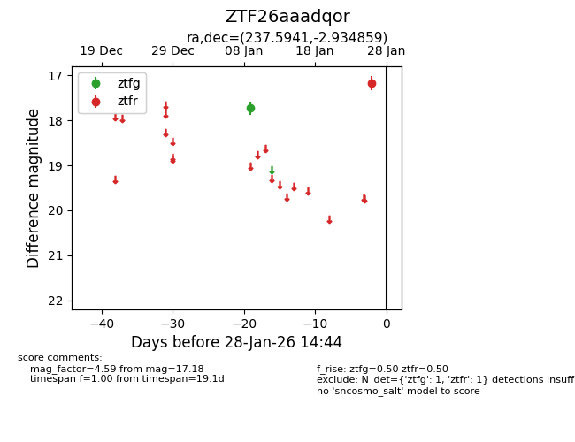
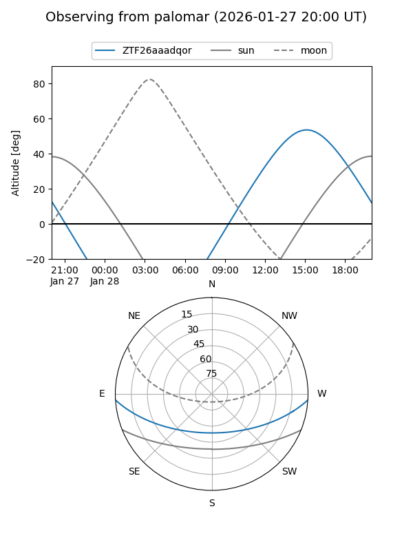

ZTF26aaadqor
Target ZTF26aaadqor at 2026-01-28 14:46
Aliases and brokers:
FINK: link
Lasair: link
ALeRCE: link
alt names
ZTF26aaadqor (ztf,fink_ztf)
Coordinates:
equatorial (ra, dec) = 237.5941,-2.93486
equatorial (HMS+DMS) = 15:50:22.58,-02:56:05.49
galactic (l, b) = (5.2299,+37.44858)
Flags:
Photometry:
last ztfg=17.73, ztfr=17.18
1 ztfg, 1 ztfr detections
Lightcurve

Visibility


Additional plots